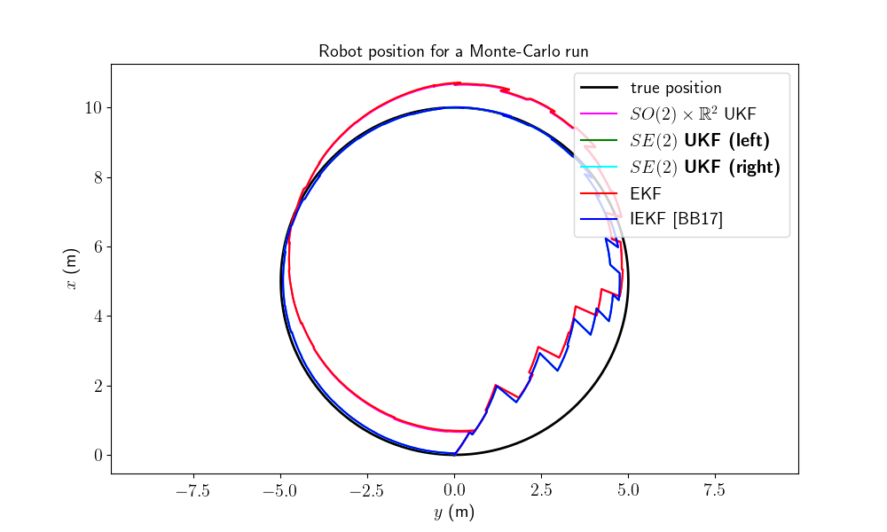
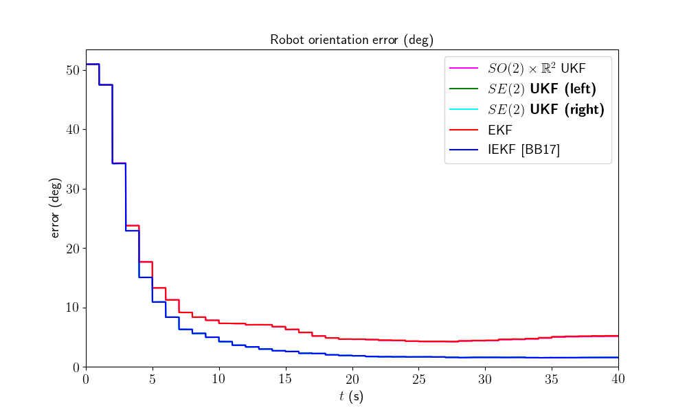
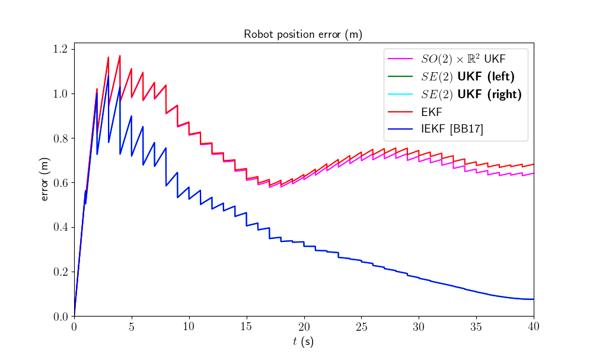
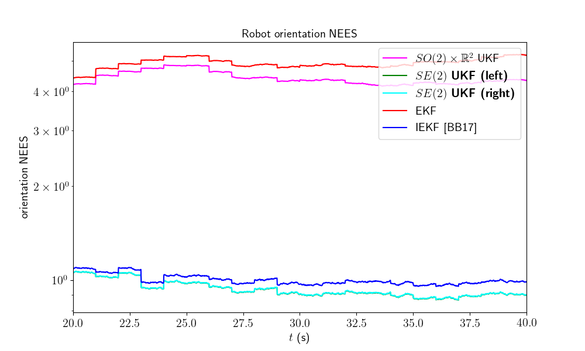
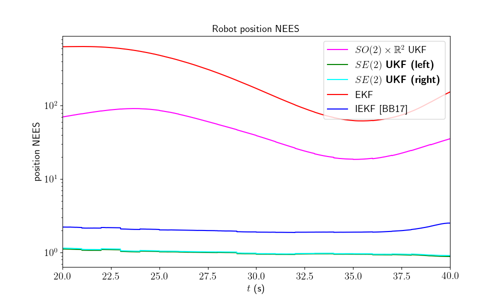

Note
Click here to download the full example code
2D Robot Localization - Benchmark¶
Goals of this script:
implement different UKFs on the 2D robot localization example.
design the Extended Kalman Filter (EKF) and the Invariant Extended Kalman Filter (IEKF) [BB17].
compare the different algorithms with Monte-Carlo simulations.
We assume the reader is already familiar with the considered problem described in the tutorial.
We previously designed an UKF with a standard uncertainty representation. An advantage of the versatility of the UKF is to speed up implementation, tests, and comparision of algorithms with different uncertainty representations. Indeed, for the given problem, three different UKFs emerge, defined respectively as:
The state is embedded in \(SO(2) \times \mathbb{R}^2\), where:
the retraction \(\varphi(.,.)\) is the \(SO(2)\) exponential for orientation and the vector addition for position.
the inverse retraction \(\varphi^{-1}(.,.)\) is the \(SO(2)\) logarithm for orientation and the vector subtraction for position.
The state is embedded in \(SE(2)\) with left multiplication, i.e.
the retraction \(\varphi(.,.)\) is the \(SE(2)\) exponential, where the state multiplies on the left the uncertainty \(\boldsymbol{\xi}\).
the inverse retraction \(\varphi^{-1}(.,.)\) is the \(SE(2)\) logarithm.
this left UKF on \(SE(2)\) corresponds to the Invariant Extended Kalman Filter (IEKF) recommended in [BB17].
The state is embedded in \(SE(2)\) with right multiplication, i.e.
the retraction \(\varphi(.,.)\) is the \(SE(2)\) exponential, where the state multiplies on the right the uncertainty \(\boldsymbol{\xi}\).
the inverse retraction \(\varphi^{-1}(.,.)\) is the \(SE(2)\) logarithm.
We tests the filters on simulation with strong initial heading error.
Import¶
from ukfm import SO2, UKF, EKF
from ukfm import LOCALIZATION as MODEL
import ukfm
import numpy as np
import matplotlib
ukfm.utils.set_matplotlib_config()
We compare the filters on a large number of Monte-Carlo runs.
# Monte-Carlo runs
N_mc = 100
Simulation Setting¶
We set the simulation as in [BB17], section IV. The robot drives along a 10 m diameter circle for 40 seconds with high rate odometer measurements (100 Hz) and low rate GPS measurements (1 Hz). The vehicle gets moderate angular velocity uncertainty and highly precise linear velocity. The initial values of the heading error is very strong, 45° standard deviation, while the initial position is known.
# sequence time (s)
T = 40
# odometry frequency (Hz)
odo_freq = 100
# create the model
model = MODEL(T, odo_freq)
# odometry noise standard deviation
odo_std = np.array([0.01, # speed (v/m)
0.01, # speed (v/m)
1 / 180 * np.pi]) # angular speed (rad/s)
# GPS frequency (Hz)
gps_freq = 1
# GPS noise standard deviation (m)
gps_std = 1
# radius of the circle trajectory (m)
radius = 5
# initial heading error standard deviation
theta0_std = 45/180*np.pi
Filter Design¶
The UKFs are compared to an Extended Kalman FIlter (EKF) and an Invariant EKF (IEKF). The EKF has the same uncertainty representation as the UKF with the retraction on \(SO(2) \times \mathbb{R}^2\), whereas the IEKF has the same uncertainty representation as the UKF with the left retraction on \(SE(2)\).
# propagation noise covariance matrix
Q = np.diag(odo_std**2)
# measurement noise covariance matrix
R = gps_std**2*np.eye(2)
# initial covariance matrix
P0 = np.zeros((3, 3))
# we take into account initial heading error
P0[0, 0] = theta0_std ** 2
# sigma point parameter
alpha = np.array([1e-3, 1e-3, 1e-3])
We set error variables before launching Monte-Carlo simulations. As we have five similar methods, the code is redundant.
ukf_err = np.zeros((N_mc, model.N, 3))
left_ukf_err = np.zeros_like(ukf_err)
right_ukf_err = np.zeros_like(ukf_err)
iekf_err = np.zeros_like(ukf_err)
ekf_err = np.zeros_like(ukf_err)
We record Normalized Estimation Error Squared (NEES) for consistency evaluation (see Results).
ukf_nees = np.zeros((N_mc, model.N, 2))
left_ukf_nees = np.zeros_like(ukf_nees)
right_ukf_nees = np.zeros_like(ukf_nees)
iekf_nees = np.zeros_like(ukf_nees)
ekf_nees = np.zeros_like(ukf_nees)
Monte-Carlo Runs¶
We run the Monte-Carlo through a for loop.
Note
We sample for each Monte-Carlo run an initial heading error from the true distribution (\(\mathbf{P}_0\)). This requires many Monte-Carlo samples.
for n_mc in range(N_mc):
print("Monte-Carlo iteration(s): " + str(n_mc + 1) + "/" + str(N_mc))
# simulation true trajectory
states, omegas = model.simu_f(odo_std, radius)
# simulate measurement
ys, one_hot_ys = model.simu_h(states, gps_freq, gps_std)
# initialize filter with inaccurate state
state0 = model.STATE(
Rot=states[0].Rot.dot(SO2.exp(theta0_std * np.random.randn(1))),
p=states[0].p)
# define the filters
ukf = UKF(state0=state0, P0=P0, f=model.f, h=model.h, Q=Q, R=R,
phi=model.phi,
phi_inv=model.phi_inv,
alpha=alpha)
left_ukf = UKF(state0=state0, P0=P0, f=model.f, h=model.h, Q=Q, R=R,
phi=model.left_phi,
phi_inv=model.left_phi_inv,
alpha=alpha)
right_ukf = UKF(state0=state0, P0=P0, f=model.f, h=model.h, Q=Q, R=R,
phi=model.right_phi,
phi_inv=model.right_phi_inv,
alpha=alpha)
iekf = EKF(model=model, state0=state0, P0=P0, Q=Q, R=R,
FG_ana=model.iekf_FG_ana,
H_ana=model.iekf_H_ana,
phi=model.left_phi)
ekf = EKF(model=model, state0=state0, P0=P0, Q=Q, R=R,
FG_ana=model.ekf_FG_ana,
H_ana=model.ekf_H_ana,
phi=model.phi)
# variables for recording estimates of the Monte-Carlo run
ukf_states = [state0]
left_states = [state0]
right_states = [state0]
iekf_states = [state0]
ekf_states = [state0]
ukf_Ps = np.zeros((model.N, 3, 3))
left_ukf_Ps = np.zeros_like(ukf_Ps)
right_ukf_Ps = np.zeros_like(ukf_Ps)
ekf_Ps = np.zeros_like(ukf_Ps)
iekf_Ps = np.zeros_like(ukf_Ps)
ukf_Ps[0] = P0
left_ukf_Ps[0] = P0
right_ukf_Ps[0] = P0
ekf_Ps[0] = P0
iekf_Ps[0] = P0
# measurement iteration number
k = 1
# filtering loop
for n in range(1, model.N):
ukf.propagation(omegas[n-1], model.dt)
left_ukf.propagation(omegas[n-1], model.dt)
right_ukf.propagation(omegas[n-1], model.dt)
iekf.propagation(omegas[n-1], model.dt)
ekf.propagation(omegas[n-1], model.dt)
# update only if a measurement is received
if one_hot_ys[n] == 1:
ukf.update(ys[k])
left_ukf.update(ys[k])
right_ukf.update(ys[k])
iekf.update(ys[k])
ekf.update(ys[k])
k = k + 1
ukf_states.append(ukf.state)
left_states.append(left_ukf.state)
right_states.append(right_ukf.state)
iekf_states.append(iekf.state)
ekf_states.append(ekf.state)
ukf_Ps[n] = ukf.P
left_ukf_Ps[n] = left_ukf.P
right_ukf_Ps[n] = right_ukf.P
iekf_Ps[n] = iekf.P
ekf_Ps[n] = ekf.P
# get state trajectory
Rots, ps = model.get_states(states, model.N)
ukf_Rots, ukf_ps = model.get_states(ukf_states, model.N)
left_ukf_Rots, left_ukf_ps = model.get_states(left_states, model.N)
right_ukf_Rots, right_ukf_ps = model.get_states(right_states, model.N)
iekf_Rots, iekf_ps = model.get_states(iekf_states, model.N)
ekf_Rots, ekf_ps = model.get_states(ekf_states, model.N)
# record errors
ukf_err[n_mc] = model.errors(Rots, ukf_Rots, ps, ukf_ps)
left_ukf_err[n_mc] = model.errors(Rots, left_ukf_Rots, ps, left_ukf_ps)
right_ukf_err[n_mc] = model.errors(Rots, right_ukf_Rots, ps, right_ukf_ps)
iekf_err[n_mc] = model.errors(Rots, iekf_Rots, ps, iekf_ps)
ekf_err[n_mc] = model.errors(Rots, ekf_Rots, ps, ekf_ps)
# record NEES
ukf_nees[n_mc] = model.nees(ukf_err[n_mc], ukf_Ps, ukf_Rots, ukf_ps, 'STD')
left_ukf_nees[n_mc] = model.nees(left_ukf_err[n_mc], left_ukf_Ps,
left_ukf_Rots, left_ukf_ps, 'LEFT')
right_ukf_nees[n_mc] = model.nees(right_ukf_err[n_mc], right_ukf_Ps,
right_ukf_Rots, right_ukf_ps, 'RIGHT')
iekf_nees[n_mc] = model.nees(iekf_err[n_mc], iekf_Ps, iekf_Rots, iekf_ps,
'LEFT')
ekf_nees[n_mc] = model.nees(ekf_err[n_mc], ekf_Ps, ekf_Rots, ekf_ps, 'STD')
Out:
Monte-Carlo iteration(s): 1/100
Monte-Carlo iteration(s): 2/100
Monte-Carlo iteration(s): 3/100
Monte-Carlo iteration(s): 4/100
Monte-Carlo iteration(s): 5/100
Monte-Carlo iteration(s): 6/100
Monte-Carlo iteration(s): 7/100
Monte-Carlo iteration(s): 8/100
Monte-Carlo iteration(s): 9/100
Monte-Carlo iteration(s): 10/100
Monte-Carlo iteration(s): 11/100
Monte-Carlo iteration(s): 12/100
Monte-Carlo iteration(s): 13/100
Monte-Carlo iteration(s): 14/100
Monte-Carlo iteration(s): 15/100
Monte-Carlo iteration(s): 16/100
Monte-Carlo iteration(s): 17/100
Monte-Carlo iteration(s): 18/100
Monte-Carlo iteration(s): 19/100
Monte-Carlo iteration(s): 20/100
Monte-Carlo iteration(s): 21/100
Monte-Carlo iteration(s): 22/100
Monte-Carlo iteration(s): 23/100
Monte-Carlo iteration(s): 24/100
Monte-Carlo iteration(s): 25/100
Monte-Carlo iteration(s): 26/100
Monte-Carlo iteration(s): 27/100
Monte-Carlo iteration(s): 28/100
Monte-Carlo iteration(s): 29/100
Monte-Carlo iteration(s): 30/100
Monte-Carlo iteration(s): 31/100
Monte-Carlo iteration(s): 32/100
Monte-Carlo iteration(s): 33/100
Monte-Carlo iteration(s): 34/100
Monte-Carlo iteration(s): 35/100
Monte-Carlo iteration(s): 36/100
Monte-Carlo iteration(s): 37/100
Monte-Carlo iteration(s): 38/100
Monte-Carlo iteration(s): 39/100
Monte-Carlo iteration(s): 40/100
Monte-Carlo iteration(s): 41/100
Monte-Carlo iteration(s): 42/100
Monte-Carlo iteration(s): 43/100
Monte-Carlo iteration(s): 44/100
Monte-Carlo iteration(s): 45/100
Monte-Carlo iteration(s): 46/100
Monte-Carlo iteration(s): 47/100
Monte-Carlo iteration(s): 48/100
Monte-Carlo iteration(s): 49/100
Monte-Carlo iteration(s): 50/100
Monte-Carlo iteration(s): 51/100
Monte-Carlo iteration(s): 52/100
Monte-Carlo iteration(s): 53/100
Monte-Carlo iteration(s): 54/100
Monte-Carlo iteration(s): 55/100
Monte-Carlo iteration(s): 56/100
Monte-Carlo iteration(s): 57/100
Monte-Carlo iteration(s): 58/100
Monte-Carlo iteration(s): 59/100
Monte-Carlo iteration(s): 60/100
Monte-Carlo iteration(s): 61/100
Monte-Carlo iteration(s): 62/100
Monte-Carlo iteration(s): 63/100
Monte-Carlo iteration(s): 64/100
Monte-Carlo iteration(s): 65/100
Monte-Carlo iteration(s): 66/100
Monte-Carlo iteration(s): 67/100
Monte-Carlo iteration(s): 68/100
Monte-Carlo iteration(s): 69/100
Monte-Carlo iteration(s): 70/100
Monte-Carlo iteration(s): 71/100
Monte-Carlo iteration(s): 72/100
Monte-Carlo iteration(s): 73/100
Monte-Carlo iteration(s): 74/100
Monte-Carlo iteration(s): 75/100
Monte-Carlo iteration(s): 76/100
Monte-Carlo iteration(s): 77/100
Monte-Carlo iteration(s): 78/100
Monte-Carlo iteration(s): 79/100
Monte-Carlo iteration(s): 80/100
Monte-Carlo iteration(s): 81/100
Monte-Carlo iteration(s): 82/100
Monte-Carlo iteration(s): 83/100
Monte-Carlo iteration(s): 84/100
Monte-Carlo iteration(s): 85/100
Monte-Carlo iteration(s): 86/100
Monte-Carlo iteration(s): 87/100
Monte-Carlo iteration(s): 88/100
Monte-Carlo iteration(s): 89/100
Monte-Carlo iteration(s): 90/100
Monte-Carlo iteration(s): 91/100
Monte-Carlo iteration(s): 92/100
Monte-Carlo iteration(s): 93/100
Monte-Carlo iteration(s): 94/100
Monte-Carlo iteration(s): 95/100
Monte-Carlo iteration(s): 96/100
Monte-Carlo iteration(s): 97/100
Monte-Carlo iteration(s): 98/100
Monte-Carlo iteration(s): 99/100
Monte-Carlo iteration(s): 100/100
Results¶
We first visualize the robot trajectory (for the last run) and the errors w.r.t. orientation and position (averaged over Monte-Carlo). As simulations have random process, the trajectory plot just gives us an indication but not a proof of performances.
ukf_e, left_ukf_e, right_ukf_e, iekf_e, ekf_e = model.benchmark_plot(
ukf_err, left_ukf_err, right_ukf_err, iekf_err, ekf_err, ps, ukf_ps,
left_ukf_ps, right_ukf_ps, ekf_ps, iekf_ps)
- 
- 
- 
Two groups of filters emerge: group 1) consists of EKF and \(SO(2) \times \mathbb{R}^2\) UKF; and group 2) have IEKF, left \(SE(2)\) UKF and right \(SE(2)\) UKF (the curves of these filters are superposed). The second group is visibly highly better regarding position estimation.
More statictical is to compute the results averaged over all the Monte-Carlo. Let us compute the Root Mean Squared Error (RMSE) for each method both for the orientation and the position.
model.benchmark_print(ukf_e, left_ukf_e, right_ukf_e, iekf_e, ekf_e)
Out:
Root Mean Square Error w.r.t. orientation (deg)
-SO(2) x R^2 UKF: 11.98
-left SE(2) UKF : 11.35
-right SE(2) UKF: 11.35
-EKF : 12.00
-IEKF : 11.35
Root Mean Square Error w.r.t. position (m)
-SO(2) x R^2 UKF: 0.75
-left SE(2) UKF : 0.45
-right SE(2) UKF: 0.45
-EKF : 0.76
-IEKF : 0.45
They confirm the results on the plot.
A consistency metric is the Normalized Estimation Error Squared (NEES). Classical criteria used to evaluate the performance of an estimation method, like the RMSE, do not inform about consistency as they do not take into account the uncertainty returned by the filter. This point is addressed by the NEES, which computes the average squared value of the error, normalized by the covariance matrix of the filter. The case NEES>1 reveals an inconsistency issue: the actual uncertainty is higher than the computed uncertainty.
model.nees_print(ukf_nees, left_ukf_nees, right_ukf_nees, iekf_nees, ekf_nees)
- 
- 
Out:
Normalized Estimation Error Squared (NEES) w.r.t. orientation
-SO(2) x R^2 UKF: 4.40
UKF : 0.94
-right SE(2) UKF: 0.94
-EKF : 4.91
-IEKF : 1.00
Normalized Estimation Error Squared (NEES) w.r.t. position
-SO(2) x R^2 UKF: 49.00
-left SE(2) UKF : 0.99
-right SE(2) UKF: 1.01
-EKF : 275.28
-IEKF : 2.02
As the filters are initialized with perfect position and zero covariance w.r.t. position, we compute NEES only after 20 s for avoiding numerical issues (during the first secondes of the trajectory the covariance matrix \(\mathbf{P}_n\) is very low so inverting it leads to insignificantly high numbers). Results are clear, the \(SE(2)\) UKF are the more consistent.
Which filter is the best ? In this setting, the left UKF, the right UKF and the IEKF filters obtain similar accurate results, that clearly outperform \(SO(2) \times \mathbb{R}^2\) UKF, and EKF, whereas the two UKFs are the more consistent.
Note
We have set all the filters with the same “true” noise covariance parameters. However, both EKF and UKF based algorithms may better deal , with non-linearity by e.g. inflated propagation noise covariance.
Conclusion¶
This script compares different algorithms for 2D robot localization. Two groups of filters emerge: the \(SO(2) \times \mathbb{R}^2\) UKF and the EKF represent the first group; and the left \(SE(2)\) UKF, the right \(SE(2)\) UKF and the IEKF constitute the second group. For the considered set of parameters, it is evident that embedded the state in \(SE(2)\) is advantageous for state estimation.
You can now:
compare the filters in different scenarios. Indeed, UKF and their (I)EKF counterparts may obtain different results when noise is e.g. inflated or with different initial conditions or different trajectory.
test the filters in a slightly different model (e.g. with orientation measurement), which is straightforward for the UKFs.
Total running time of the script: ( 20 minutes 8.624 seconds)